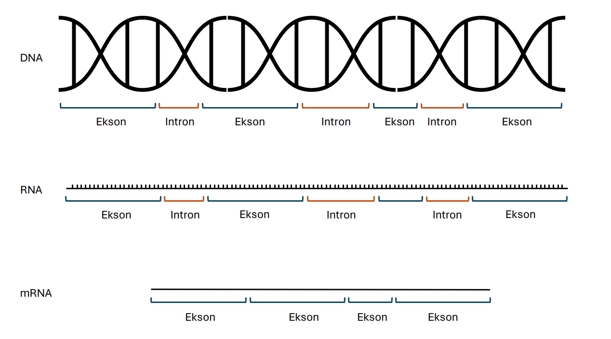

Proteinsyntesen#
Til læreren 🧑🏫
Jeg anbefaler at man har litt kjennskap til disse emnene før man går gjennom dette prosjektet.
Hva er proteinsyntesen?#
Proteiner er livsnødvendige stoffer som finnes i alt fra skjelett til muskler, hår, hud, blod og organer.
Proteiner består av lange kjeder med aminosyrer. Det er \(20\) forskjellige aminosyrer som bygger opp proteiner i kroppen. Rekkefølgen av aminosyrer, og den tredimensjonale formen, bestemmer egenskapene til proteinet.
Aminosyrene fungerer litt som legoklosser. Hvis man har \(20\) forskjellige typer legoklosser kan man lage mye forskjellig, som et hus 🏠, en hest 🐎 eller en krokodille 🐊. På samme måte kan man lage mange forskjellige proteiner av bare \(20\) aminosyrer.
DNA-molekylet 🧬#
Når man bygger lego så har man ofte en slags manual, eller en oppskrift, på hvordan man skal sette sammen klossene for å få en bil 🚗, en tiger 🐅 eller en Millenium Falcon™️. Hvor sitter denne oppskriften i kroppen? Vel, den sitter som en kode lagret i hver enkelt celle; i et molekyl som heter DNA-molekylet 🧬
DNA-molekylet ser ut som en spiraltrapp. Hvert «trappetrinn» består av et basepar. Det er fire baser å velge mellom i DNA: Adenin, Tymin, Cytosin og Guanin. Disse kommer alltid i par, så hvis det er adenin på den ene siden, så er det tymin på den andre siden, og hvis det er cytosin på den ene siden, så er det guanin på den andre siden.
Sånn kan en bit av DNA se ut:
TAGTTCGGG
ATCAAGCCC
mRNA#
DNA-molekylet befinner seg i cellekjernen, men selve byggeprosessen skjer utenfor cellekjernen, på ribosomene. Man flytter ikke DNA-molekylet ut, men lager en kopi av den ene siden i DNA. Kopien kaller vi for mRNA.
Når vi lager mRNA ser vi på en av sidene av DNA-molekylet.
DNA:
TAGTTCGGG
Når mRNA skal kopiere dette segmentet så tar vi de motsatte baseparene, men basen Tymin byttes ut med Uracil.
A -> U
T -> A
C -> G
G -> C
Kopien av DNA-molekylet over ser da slik ut.
mRNA:
AUCAAGCCC
Dette mRNA-molekylet sendes så ut av cellekjernen og til ribosomene. Der leses det av tre og tre baser, noe som heter tripletter eller kodoner.
mRNA:
AUC AAG CCC
Tilsvarer aminosyrene:
Isoleucin
Lysin
Prolin
En triplett (AUG) koder for starten av proteinet. Denne koder også for metionin. Det er også tre tripletter som koder for et stoppsignal (UAA, UAG, UGA).
Proteiner består vanligvis av hundrevis og noen ganger tusenvis av aminosyrer. Da blir det litt vanskelig å sitte å oversette base for base for å finne ut hvordan proteinet vil se ut fra en DNA-sekvens. Heldigvis har vi datamaskiner som kan gjøre dette litt kjappere, og det er det vi skal gjøre i dette programmeringsprosjektet.
Programmering av proteinsyntesen#
Del 1: Lage mRNA#
Vi kan representere en bit av DNA som en tekst DNA = "TAGTTCGGG" i Python. Målet vårt er å lage en tråd med mRNA fra basene i DNA. For å oversette basene bruker vi en ordbok.
# En DNA-tråd, representert som en tekst.
DNA = "TAGTTCGGG"
# Ordbok som oversetter fra baser i DNA til baser i mRNA
DNA_til_mRNA = {
"A" : "U",
"T" : "A",
"C" : "G",
"G" : "C"
}
# En tom mRNA-Tråd
mRNA = ""
# Tar alle basene i DNA, oversetter, og setter inn i mRNA-tråden
for x in DNA:
mRNA += DNA_til_mRNA[x]
# Skriver ut DNA og mRNA
print("DNA: ", DNA)
print("mRNA: ", mRNA)
DNA: TAGTTCGGG
mRNA: AUCAAGCCC
Del 2: Lage aminosyrer#
Nå gjenstår det bare å lage aminosyrer fra triplettene på mRNA-tråden. For å oversette bruker vi en kodontabell, en oversikt over hvilke tripletter som tilsvarer hvilke aminosyrer.
# En DNA-tråd, representert som en tekst.
DNA = "TAGTTCGGG"
# Ordbok som oversetter fra baser i DNA til baser i mRNA
DNA_til_mRNA = {
"A" : "U",
"T" : "A",
"C" : "G",
"G" : "C"
}
# En tom mRNA-Tråd
mRNA = ""
# Tar alle basene i DNA, oversetter, og setter inn i mRNA-tråden
for x in DNA:
mRNA += DNA_til_mRNA[x]
# Skriver ut DNA og mRNA
print("DNA: ", DNA)
print("mRNA: ", mRNA)
# Ordbok som oversetter fra tripletter til aminosyrer.
kodontabell = {
"UUU" : "Fenylalanin", "UCU" : "Serin", "UAU" : "Tyrosin", "UGU" : "Cystein",
"UUC" : "Fenylalanin", "UCC" : "Serin", "UAC" : "Tyrosin", "UGC" : "Cystein",
"UUA" : "Leucin", "UCA" : "Serin", "UAA" : "STOPP", "UGA" : "STOPP",
"UUG" : "Leucin", "UCG" : "Serin", "UAG" : "STOPP", "UGG" : "Tryptofan",
"CUU" : "Leucin", "CCU" : "Prolin", "CAU" : "Histidin", "CGU" : "Arginin",
"CUC" : "Leucin", "CCC" : "Prolin", "CAC" : "Histidin", "CGC" : "Arginin",
"CUA" : "Leucin", "CCA" : "Prolin", "CAA" : "Glutamin", "CGA" : "Arginin",
"CUG" : "Leucin", "CCG" : "Prolin", "CAG" : "Glutamin", "CGG" : "Arginin",
"AUU" : "Isoleucin", "ACU" : "Threonin", "AAU" : "Asparagin", "AGU" : "Serin",
"AUC" : "Isoleucin", "ACC" : "Threonin", "AAC" : "Asparagin", "AGC" : "Serin",
"AUA" : "Isoleucin", "ACA" : "Threonin", "AAA" : "Lysin", "AGA" : "Arginin",
"AUG" : "Metionin(START)", "ACG" : "Threonin", "AAG" : "Lysin", "AGG" : "Arginin",
"GUU" : "Valin", "GCU" : "Alanin", "GAU" : "Asparaginsyre", "GGU" : "Glycin",
"GUC" : "Valin", "GCC" : "Alanin", "GAC" : "Asparaginsyre", "GGC" : "Glycin",
"GUA" : "Valin", "GCA" : "Alanin", "GAA" : "Glutaminsyre", "GGA" : "Glycin",
"GUG" : "Valin", "GCG" : "Alanin", "GAG" : "Glutaminsyre", "GGG" : "Glycin"
}
# Henter ut tre og tre baser fra mRNA, setter de inn i ordboken og skriver ut aminosyren.
for i in range(0, len(mRNA) - 2, 3):
triplett = mRNA[i:i+3]
print(kodontabell[triplett])
DNA: TAGTTCGGG
mRNA: AUCAAGCCC
Isoleucin
Lysin
Prolin
Informasjon om kodoner og aminosyrer er hentet fra SNL (lenke) og Institutt for biovitenskap - UIO (lenke).
Oppgaver#
Bruk dette programmet til å svare på spørsmålene under.
Oppgave 1
Skriv inn en selvvalgt DNA-sekvens i programmet.
Se om du klarer å få ut en rekke med aminosyrer som starter med Metionin(START) og slutter med STOPP.
Oppgave 2
Skriv inn en selvvalgt DNA-sekvens i programmet.
Notér aminosyrene du får skrevet ut 📝
Modifiser en av bokstavene i DNA-sekvensen din.
Skjer det noen endring i aminosyrene? Kan dette brukes til å forklare mutasjoner?
Oppgave 3
Skriv inn en selvvalgt DNA-sekvens i programmet.
Notér aminosyrene du får skrevet ut 📝
Fjern en bokstav i begynnelsen av DNA-sekvensen din.
Hvilken endring skjer i aminosyrene dine? Hvordan er denne mutasjonen annerledes enn mutasjonen i forrige oppgave?
Oppgave 4
Her er hele genet for produksjonen av enzymet luciferase hos ildfluen Photinus pyralis 🪰. Dette enzymet gjør at ildfluen kan produsere lys i mørket 🤯
DNA = "GACGTCTTTATTGATCCATGATTCGGGCAAACACTTTTCACCGGTTTGGGTATTTAAACCGTTAATGTTATTTCTTCGATTTTAACACCAGTTTGAGTGTTTGTAAAAATAATATATGTAAAATCATCGACTACGAATATTTTCGTTATAAATTTAGCATTTGTTGTTTATTTTATTTTAAATTTGCTACACTAATTCTCGGTTTCCAGGAGATCTTTTTCCATAAATTCGTTGCCTTAAGGAAACACAATGTAAGAACTTACAGCGAGCGTCACTGTAATCGTAAGGCCATGACAACCATTTTACCTTCTGCGGTTTTTGTATTTCTTTCCGGGCCGCGGTAAGATAGGAGATCTCCTACCTTGGCGACCTCTCGTTGACGTATTCCGATACTTCTCTATGCGGGACCAAGGACCTTGTTAACGAAAACACTCATAAAGACAGACTAAAGAAAGCTCAATTGCTTTACAAGAATACAAAGAAATCTGTCTACGTGTATAGCTCCACTTGTAGTGCATGCGCCTTATGAAGCTTTACAGGCAAGCCAACCGTCTTCGATACTTTGCTATACCCGACTTATGTTTAGTGTCTTAGCAGCATACGTCACTTTTGAGAGAAGTTAAGAAATACGGCCACAACCCGCGCAATAAATAGCCTCAACGTCAACGCGGGCGCTTGCTGTAAATATTACTTGCATTCGTGGGAGCGGTAGTCTGGTTTCCCTTACTGCATAAATTAAAAATTCCACTTAACGAGTTGTCATACTTGTAAAGCGTCGGATGGCATCACAAACAAAGGTTTTTCCCCAACGTTTTTTAAAACTTGCACGTTTTTTTTAATGGTTATTAGGTCTTTTAATAATAGTACCTAAGATTTTGCCTAATGGTCCCTAAAGTCAGCTACATGTGCAAGCAGTGTAGAGTAGATGGAGGGCCAAAATTACTTATGCTAAAACATGGTCTCAGGAAACTAGCACTGTTTTGTTAACGTGACTATTACTTAAGGAGACCTAGATGACCCAATGGATTCCCACACCGGGAAGGCGTATCTTGACGGACGCAGTCTAAGAGCGTACGGTCCATACAGCATATTGTTCTCTAATTCATTACAACGATGTGTGTAACATCTCTAGGATAAAAACCGTTAGTTTAGTAAGGCCTATGACGCTAAAATTCACAACAAGGTAAGGTAGTGCCAAAACCTTACAAATGATGTGAGCCTATAAACTATACACCTAAAGCTCAGCAGAATTACATATCTAAACTTCTTCTCGACAAAAATGCTAGGGAAGTCCTAATGTTTTAAGTTTCACGCAACGATCATGGTTGGGATAAAAGTAAGAAGCGGTTTTCGTGAGACTAACTGTTTATGCTAAATAGATTAAATGTGCTTTAACGAAGACCCCCGCGTGGAGAAAGCTTTCTTCAGCCCCTTCGCCAACGTTTTGCCACTCAATTCGCGTAACGATCATAAAGTTCCGAGATTTTGCCGCGCATCGAAGGTAGAAGGTCCCTATGCTGTTCCTATACCCGAGTGACTCTGATGTAGTCGATAAGACTAATGTGGGCTCCCCCTACTATTTGGCCCGCGCCAGCCATTTCAACAAGGTAAAAAACTTCGCTTCCAACACCTAGACCTATGGCCCTTTTGCGACCCGCAATTAGTCTCTCCGCTTAATACACAGTCTCCTGGATACTAATACAGGCCAATACATTTGTTAGGCCTTCGCTGGTTGCGGAACTAACTGTTCCTACCTACCGATGTAAGACCTCTGTATCGAATGACCCTGCTTCTGCTTGTGAAGAAGTATCAACTGGCGAACTTCAGAAATTAATTTATGTTTCCTATAGTCCATTACTTCTAAAAATGTACGTGTGTGCGATGTTATGGACATCCACCGGGGGCGACTTAACCTTAGCTATAACAATGTTGTGGGGTTGTAGAAGCTGCGCCCGCACCGTCCAGAAGGGCTGCTACTGCGGCCACTTGAAGGGCGGCGGCAACAACAAAACCTCGTGCCTTTCTGCTACTGCCTTTTTCTCTAGCACCTAATGCAGCGGTCATTTACTTAAGCAAAATGCAATGAGCATGATGTTAAGAAAAGTATCCAGTTCATTGTTGGCGCTTTTTCAACGCGCCTCCTCAACACAAACACCTGCTTCATGGCTTTCCAGAATGGCCTTTTGAGCTGCGTTCTTTTTAGTCTCTCTAGGAGTATTTCCGGTTCTTCCCGCCTTTCAGGTTTAACATTTTACATTGACATAAGTCGCTACTGCTTTAAGAATCGATAACATTATAATATACGTTTAACTACTTACCATTAAAACATTAACACCCAGTGACATGATAAAATTGCTTATTATTTTAGTCCATATCCATTGATTTTT"
Sett denne DNA-sekvensen inn i programmet ditt og analyser aminosyrene. Er det noe galt med aminosyrene du får?
Løsning
I utskriften kan vi se flere STOPP-kodoner i midten av sekvensen. Dette kan jo ikke være riktig?
Årsaken er at den komplette DNA-sekvensen inneholder flere deler som ikke koder for proteiner. Når eukaryote celler lager mRNA blir disse delene fjernet før proteinet lages, i det som kalles RNA-prosesseringen.
Delene som ikke koder for proteinet heter introner, mens delene som faktisk koder for proteinet heter eksoner.
Her er en DNA sekvens med bare eksoner. Bitene som ikke koder for enzymet er fjernet. Prøv å sette denne inn i programmet.
DNA = "TACCTTCTGCGGTTTTTGTATTTCTTTCCGGGCCGCGGTAAGATAGGAGATCTCCTACCTTGGCGACCTCTCGTTGACGTATTCCGATACTTCTCTATGCGGGACCAAGGACCTTGTTAACGAAAATGTCTACGTGTATAGCTCCACTTGTAGTGCATGCGCCTTATGAAGCTTTACAGGCAAGCCAACCGTCTTCGATACTTTGCTATACCCGACTTATGTTTAGTGTCTTAGCAGCATACGTCACTTTTGAGAGAAGTTAAGAAATACGGCCACAACCCGCGCAATAAATAGCCTCAACGTCAACGCGGGCGCTTGCTGTAAATATTACTTGCACTTAACGAGTTGTCATACTTGTAAAGCGTCGGATGGCATCACAAACAAAGGTTTTTCCCCAACGTTTTTTAAAACTTGCACGTTTTTTTTAATGGTTATTAGGTCTTTTAATAATAGTACCTAAGATTTTGCCTAATGGTCCCTAAAGTCAGCTACATGTGCAAGCAGTGTAGAGTAGATGGAGGGCCAAAATTACTTATGCTAAAACATGGTCTCAGGAAACTAGCACTGTTTTGTTAACGTGACTATTACTTAAGGAGACCTAGATGACCCAATGGATTCCCACACCGGGAAGGCGTATCTTGACGGACGCAGTCTAAGAGCGTACGGTCTCTAGGATAAAAACCGTTAGTTTAGTAAGGCCTATGACGCTAAAATTCACAACAAGGTAAGGTAGTGCCAAAACCTTACAAATGATGTGAGCCTATAAACTATACACCTAAAGCTCAGCAGAATTACATATCTAAACTTCTTCTCGACAAAAATGCTAGGGAAGTCCTAATGTTTTAAGTTTCACGCAACGATCATGGTTGGGATAAAAGTAAGAAGCGGTTTTCGTGAGACTAACTGTTTATGCTAAATAGATTAAATGTGCTTTAACGAAGACCCCCGCGTGGAGAAAGCTTTCTTCAGCCCCTTCGCCAACGTTTTGCGAAGGTAGAAGGTCCCTATGCTGTTCCTATACCCGAGTGACTCTGATGTAGTCGATAAGACTAATGTGGGCTCCCCCTACTATTTGGCCCGCGCCAGCCATTTCAACAAGGTAAAAAACTTCGCTTCCAACACCTAGACCTATGGCCCTTTTGCGACCCGCAATTAGTCTCTCCGCTTAATACACAGTCTCCTGGATACTAATACAGGCCAATACATTTGTTAGGCCTTCGCTGGTTGCGGAACTAACTGTTCCTACCTACCGATGTAAGACCTCTGTATCGAATGACCCTGCTTCTGCTTGTGAAGAAGTATCAACTGGCGAACTTCAGAAATTAATTTATGTTTCCTATAGTCCACCGGGGGCGACTTAACCTTAGCTATAACAATGTTGTGGGGTTGTAGAAGCTGCGCCCGCACCGTCCAGAAGGGCTGCTACTGCGGCCACTTGAAGGGCGGCGGCAACAACAAAACCTCGTGCCTTTCTGCTACTGCCTTTTTCTCTAGCACCTAATGCAGCGGTCAGTTCATTGTTGGCGCTTTTTCAACGCGCCTCCTCAACACAAACACCTGCTTCATGGCTTTCCAGAATGGCCTTTTGAGCTGCGTTCTTTTTAGTCTCTCTAGGAGTATTTCCGGTTCTTCCCGCCTTTCAGGTTTAACATT"
Data for genet er hentet fra de Wet JR, Wood KV, DeLuca M, Helinski DR, Subramani S. Firefly luciferase gene: structure and expression in mammalian cells. Mol Cell Biol. 1987 Feb;7(2):725-37. doi: 10.1128/mcb.7.2.725-737.1987. PMID: 3821727; PMCID: PMC365129.